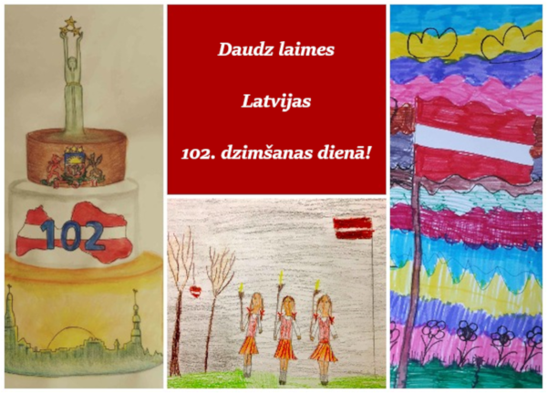
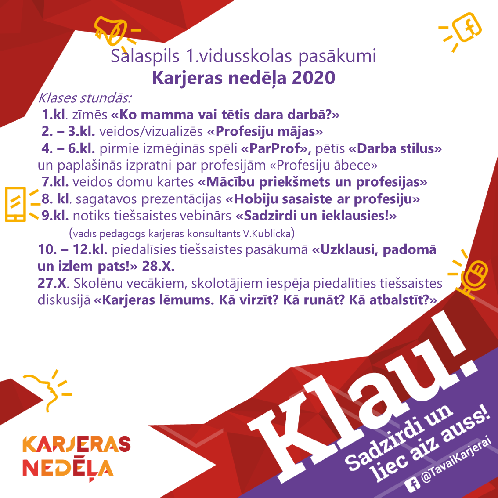
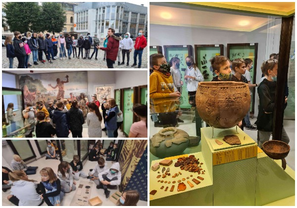
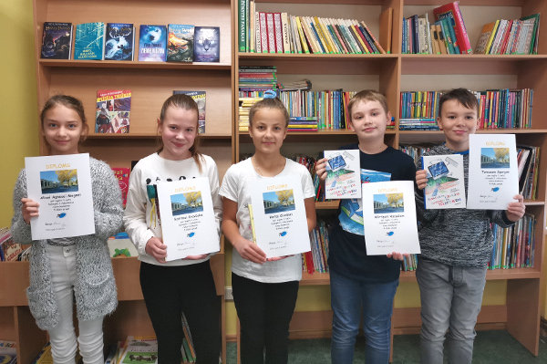
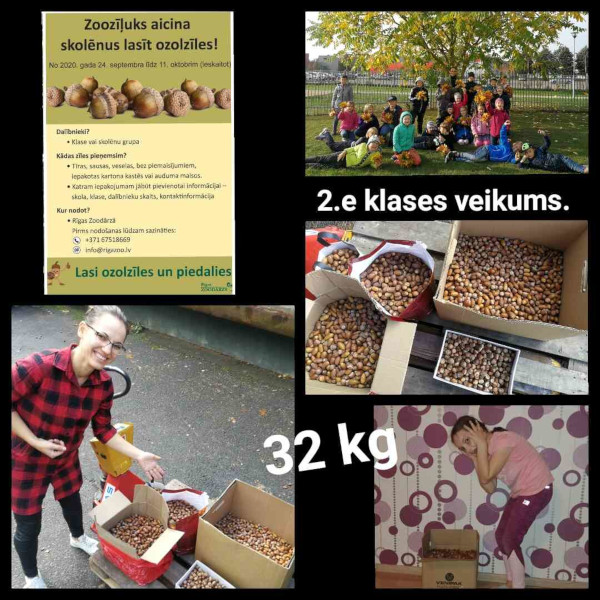

Содержание
Посвящение 7-ых классов. (17.11)
Ученики 7 класса в этот день готовились к 7 классу, выполняя разными заданиями.
Ноябрь - Месяц Дня рождения Латвии
Использованы работы Darijas Šļapakovas (3ц), Martas Beitānes (2ц) и Letīcijas Antapsones (2ц) (учитель Inta Veinšteina).
Самая красивая песня для Латвии в 102 день рождения
Ученики 2 и 3 классов вместе с учительницей Gitu Kalniņu научились и пропели самую красивую латышскую народную песню
“Горе мое, огромное горе”.
В латышской народной песне есть сила, жизнь и счастье, которая как ценность и богатство для нашего латышского народа,
поэтому, это лучший подарок на день рождения Латвии!
Много счастья, Латвия!
Самые активные ученики на 102-ой день рождения Латвии
Каждый год, приближаясь к государственным праздникам, с 5 по 12 класс выдвигаюстя школьники, которые демонстрируют самоинициативу и позитивное отношение
к общественной работе в повседневной жизни. Замысел учительницы Brigitas Mežgales-Turlajas стал красивой школьной традицией.
Использована работа Jāņa Babra (2a) (учительница Inta Veinšteina).
Конкурс "Моё выступление на день рождения Латвии, как президента страны"
Ученики Саласпилсской Средней школы №1 каждый год активно учавствуют в разных конкурсах.
Не исключение и конкурс президентской речи.
В этом году, в нём с темой "Что для меня обозначает свобода и демократия?" участвовала Daniela Vanceviča из 12б класса и Elizabete Krasnā из 6д класса.
Радуемся тем, что обе девочки лауреаты данного конкурса. 8 ноября у них была фантастическая возможность посетить Рижский замок, участвовали в съемках праздничном концерте ЛТВ
и даже пожали руки самому президенту Латвии - Эгилу Левитсу.
Поздравляем Danielu и Elizabeti с большой победой и их учителей - Dainu Tauriņu и Raminu Skuju!
Праздничный концерт в честь 102-го дня рождения Латвии с выступлением наших замечательными девочек можно будет посмотреть вечером 18 ноября на канале LTV1 .
Думая о наших ценностях - природе, местах и людях, каждую неделю будет возможность повторить и узнать
что-то новое в материале, созданном нашим выпускником Nika Stafecka. Празднуем праздники!
Завершились международные командные соревнования по математике (“Baltic Way 2020”)
В Латвийскую команду, как мы уже информировали ранее, был включен ученик 11б класса Artis Vijups. В конкуренции с 10 математическими командами других стран
Латвия поделила 4-5 место с Финляндией. Больше информации на странице VISC .
ЗДЕСЬ результаты соревнований.
11 ноября - День Лачплесиса
Приглашаем каждого в своём доме зажечь свечу, чтобы почтить память погибшим, павшим в борьбе за свободу Латвии.
Поздравления президента Латвии Эгила Левитса с Днём Лачплесиса.
Неделя карьеры в школе (26 - 30 октября)
Артис будет представлять Латвию на математической олимпиаде "Балтийский путь"
17 и 18 октября прошёл отбор команд на математическую олимпиаду "Балтийский путь". Была сфоримрована команда Латвии, в состав которой
попал ученик 11б класса Artis Vijups. Результаты отборочного тура здесь.
Стал доступен электронный атлант географии для основых школ, в апробации которого учавствовала наша учительница географии Brigita Mežgale-
Turlaja вместе с учениками 7-9-ых классов. Больше.
6ц на учебной экскурсии узнает историю (15 октября)
14 октября 6ц класс отправился на учебную экскурсию в Ригу.

Прибыв в Дворец культуры ВЭФ, нас уже ждала управляющая музея Dace и гид Marks. Так как нельзя было понять, в какой момент начнется дождь, после
дезинфекции рук отправились на территорию бывшей фабрики ВЭФ. После рассказа гида, детям нужно было найти корпуса ВЭФ,
и сфотографвироться рядом с ними. Вернувшись во Дворец культуры ВЭФ, мы получили исчерпывающий рассказ о работах по восстановлению замка, попробовали
световые эффекты в фойе, Также узнали, где сидит в зале президент, когда приходит на концерт во дворце. Также много узнали о том, что
производил ВЭФ, как отправляли телеграммы, как звонить со стационарного телефона, осмотрели разные, старые виды радио, и конечно видели,
произведенный в Латвии, фотоаппарат Minox. Также каждому домой была выдана картонная модель радио, которую можно собрать дома.
2 часть экскурсии состояла из урока в Латвийском Национальном музеи истории про Латвию. В том числе первобытные времена. Могли пройти и осмотреть
экспозиции каменного, бронзового и железного века. (История АБВ), также выполнять задания, складывая предметы
в АБВ временных поясах.
"Огромное спасибо родителям 6ц класса за поддержку! Во время экскурсии использовали защитную маску и часто дезинфицировали руки. Было очень
ценно узнать что-то новое и интересное, так и укрепить новые знанияв истории Латвии, так подумать про культуру поведения в музее,
так и провести время вместе с одноклассниками вне школы." так описывает проведенный день классный руководитель Gunta Lagzdiņa.
Школьный речевой кнокурс для учеников 4 - 6-ых классов (15 октября)
9 октября прошел школьный этап конкурс выразительного чтения с 4 по 6 класс. В этот раз из рассказаных 25 стихотворений, не одно не повторилась,
ученики также рассказали пару предложений об авторе своего произведения. Популярными авторами, по выбору наших учеников, являются M.Cielēna, P.Brūveris,
I.Zandere, O.Vācietis, L.Briedis, I.Ziedonis и другие. Самым неожиданным стало открытие новых поэтов - учеников, которые выступили
со своими собственными стихотворениями. Интересно также то, что они были созданы наблюдая облака... На каком-то уроке латышского языка ученики на улице наблюдали за облаками,
каждый ученик что-то рассморел в них и создал стихотворение. Спрашивая, было ли это трудно, молодые поэты ответили, что
было по разному. Надо надеяться на то, что скоро сможем читать сборник стихотворений Саласпилсской средней школы №1.
Лучшие в группе 4 классов– Mārtiņš Razgals (1 место), Tomass Sperga (2 место), Edvarts Slūka (3 место).
Лучшие в группе 5 классов – Katrīna Kravčuka (1 место), Keita Circāne (2 место), Alise Agnese Megne (3 место).
Лучшие в группе 6 классов – Ričards Kokins (1 место), Grēta Girgensone (2 место), Beatrise Masteiko (3 место).
Фотография лучших…
"Сердечное спасибо участникам, их родителям, учителям латышского и литературы Martai Spruženiecei, Janai Bisterei,
Raminai Skujai и Jolantai Strautiņai" говорит заместитель директора Ineta Nekraša.
2e класс отзывается на приглашение зоожёлудя (12 октября) (12. oktobris)
2e класс отозвался на просьбу помощи Рижского Зоологического сада. Которая просит собирать жёлуди, так как они отлично пригодятся обитателям зоопарка.
Эстафетный бег "Мы в спорте" (10 октября)
10 октября, в рамках проведения Саласпилсского полумарафона "Поймай ветер" прошёл задержавшийся Олимпийский день. Который включал в себя "Мы в спорте" Эстафетный
бег 4 * 5 км, в котором учавствовали две команды Саласпилсской средней школы №1. Команды 10 классов представляли E.Petrovska, A.Cunska,
T.Kramarovs (10.a) и O.Deņisenoks (10.b), в объеденение 11 и 12 классов, в команде стартовали A.Stroža, K.Brunovska (11.b)
и T.Dejus (12.b), которые провели 2 * 5 км!.
"Спасибо участникам за старт и их родителям за поддержку!" говорит учительница спорта Valda Kublicka.
Неделя добрых дел 2020 (8 октября)
Благотворительная организация Palīdzēsim.lv уже 12 год организует акцию “Неделя добрых дел”, когда посиленное внимание
оказывается помощи, для оказания которой не нужны большиие финансовые вклады.
Также и ученики 5е класса Саласпилсской средней школы №1, вместе со своими родителями, участвовали в этой акции второй год, а руководитель Dacei
Kontrimienei это уже 5 год, когда в первых неделях октября надо думать о подарочках одиноким людям Саласпилса.
Благодаря работникам Саласпилсской социальной службы, подготовленные подарки дошли до адресатов.
Делая вместе, можно достичь добрых дел больше!
Уже второй год подряд у нас есть зеленый флаг эко школы (5 октября)
Спасибо учительнице-координатору Annai Romanovai и её активным ученикам!